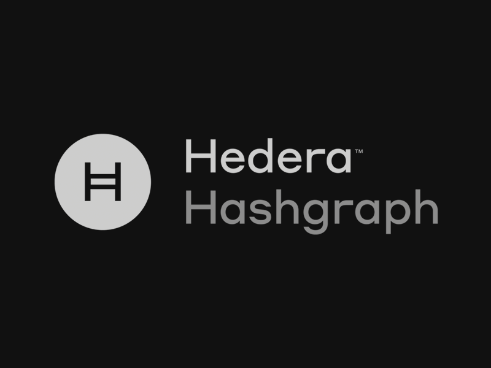

Hedera
Hedera Hashgraph is a public, distributed ledger technology (DLT) platform that supports new and existing applications to run at web scale.
Similar to a blockchain, the hashgraph DLT platform allows for the creating and exchanging value, proving identity, verifying and authenticating data,
\ as well as other tasks. Hedera's network is built on the hashgraph distributed consensus algorithm, invented by Leemon Baird, Chief Scientist at
Hedera and one of the company's co-founders. The company was founded in 2018 by Baird and Mance Harmon, who serves as Hedera's CEO. Baird and Harmon
are also the co-founders of Swirlds, a developer platform for hashgraph applications.
The hashgraph consensus algorithm that the Hedera network is built upon is able to provide near-perfect efficiency in bandwidth usage, as well
as process hundreds of thousands of transactions per second within a single shard (a fully connected, peer to peer mesh of nodes in a network).
As a result, the Hedera network is much faster and energy efficient than a traditional work of proof blockchain. In a traditional work of proof
blockchain, a single miner is chosen to select the next block. Additionally, consensus rules dictate that these blocks eventually settle into a
single longest chain agreed upon by the community. Two blocks cannot be mined simultaneously, as it will cause the blockchain to fork; if this happens,
one block will be selected and the other block will be discarded and lost.
